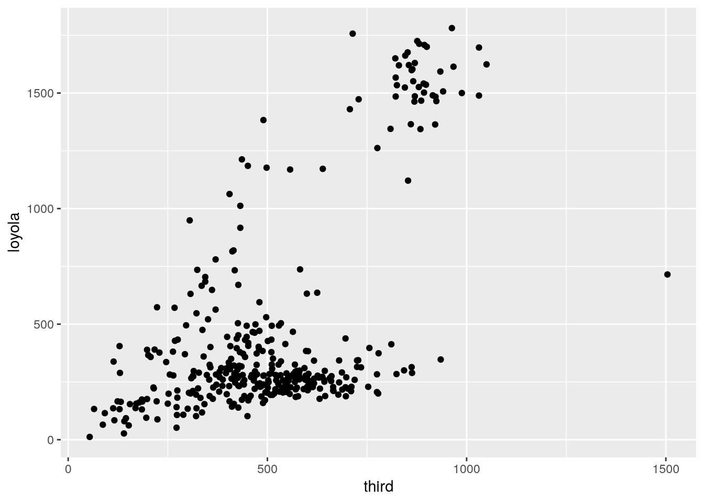
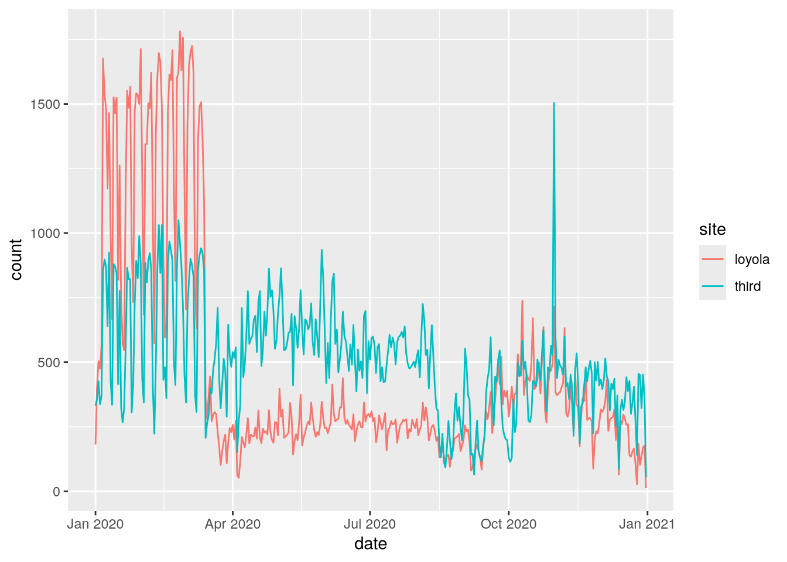
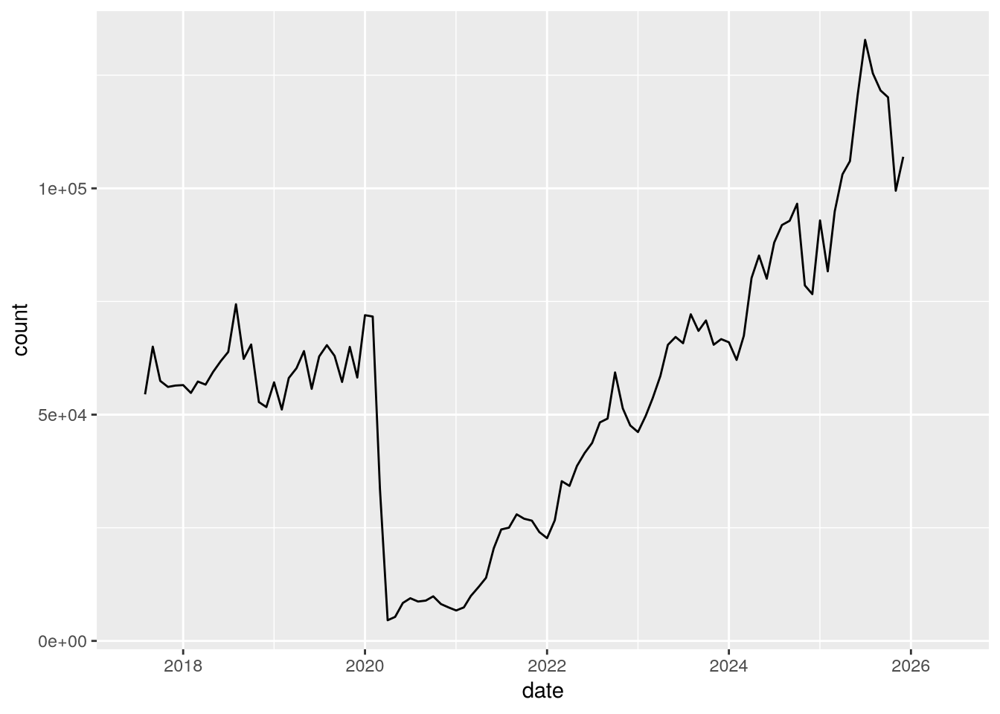

# install.packages("tidyr")
library("tidyr")21 Reshaping Data
NoteLearning Goals
After this lesson, you should be able to:
- Use the tidyr package to reshape data
ImportantRequired Packages
This chapter uses the following packages:
- ggplot2
- lubridate
- readxl
- tidyr
Chapter 14 explains how to install and load packages.
The structure of a dataset—its shape and organization—has enormous influence on how difficult it will be to analyze, so making structural changes is an important part of the cleaning process. This chapter explains how to reshape untidy data into tidy data (Section 11.2). While reshaping can seem tricky at first, making sure your dataset has the right structure before you begin analysis saves time and frustration in the long run.
21.1 The tidyr Package
The tidyr package provides functions to reshape tabular datasets. It also provides examples of tidy and untidy datasets. Like most Tidyverse packages, it comes with detailed documentation and a cheatsheet.
As usual, install the package if you haven’t already, and then load it:
21.2 An Untidy Dataset
The City of Davis has two bike counters: one is at the intersection of 3rd Street and University Avenue (the 3rd Street bike obelisk) and the other is at the intersection of Loyola Drive and Pole Line Road. The City publishes data from the bike counters online. DataLab combined the City’s 2020 bike counts, aggregated to the day level, with precipitation and wind data from the U.S. National Oceanic and Atmospheric Administration’s weather station at Sacramento Metropolitan Airport (this was the nearest weather station with complete records for 2020). We’ll use this dataset to demonstrate how to transform untidy data.
Important
Click here to download the 2020 Davis bike counts dataset.
If you haven’t already, we recommend you create a directory for this workshop. In your workshop directory, create a data/ subdirectory. Download and save the dataset in the data/ subdirectory.
NoteDocumentation for the 2020 Davis Bike Counts Dataset
Each row in the dataset contains measurements from one date-variable combination.
| Column | Description |
|---|---|
date |
The date of measurement |
variable |
What was measured: third and loyola are bike counts, prcp is total precipitation in millimeters, awnd is average daily wind speed in meters per second |
value |
The measured value |
The source for the bike counts is the City of Davis’ Bike and Pedestrian Statistics web page. The source for the total precipitation and average wind speed is NOAA’s weather station at Sacramento Metropolitan Airport.
The dataset is saved in an RDS file, which you can use the built-in readRDS function to read:
bikes = readRDS("data/2020_davis_bikes.rds")
head(bikes) date variable value
1 2020-01-01 third 332.0
2 2020-01-01 loyola 181.0
3 2020-01-01 awnd 1.7
4 2020-01-01 prcp 0.0
5 2020-01-02 third 357.0
6 2020-01-02 loyola 401.0This data is not tidy, because it breaks rule 1. The value column contains many different features—they even have different units! Soon we’ll reshape the dataset to make it tidy.
Before you reshape a dataset, you should also think about what role each column serves:
Identifiers (or indexes) are labels that distinguish observations from one another. They’re often but not always categorical. Examples include names or identification numbers, treatment groups, and dates or times. In the bike counts dataset, the
datecolumn is an identifier.Measurements are the values collected for each observation and typically the values of research interest. In the bike counts dataset, the
valuecolumn is a measurement.
A clear understanding of which columns are identifiers and which are measurements makes it easier to write the code to reshape.
21.3 Rows into Columns
In order to make the Davis bike counts data tidy, the measurements in the value column need to be moved into two separate columns, one for each of the categories in the variable column.
You can use the pivot_wider function to pivot a data frame, creating new columns from values in the rows. This makes the data frame wider (and shorter). Let’s pivot the bikes data frame on the variable column to create four new columns filled with values from the values column.
The pivot_wider function’s most important parameters are:
values_from– The column(s) that contains values for the new columns.names_from– The column that contains names for the new columns.id_cols– The identifier columns, which are not pivoted. This defaults to all columns except those invalues_fromandnames_from.
Here’s how to use the function to make bikes tidy:
bikes2 = pivot_wider(bikes, values_from = value, names_from = variable)
head(bikes2)# A tibble: 6 × 5
date third loyola awnd prcp
<date> <dbl> <dbl> <dbl> <dbl>
1 2020-01-01 332 181 1.7 0
2 2020-01-02 357 401 3 0
3 2020-01-03 426 504 1 0
4 2020-01-04 337 475 3.2 2
5 2020-01-05 370 563 2.5 0
6 2020-01-06 852 1676 1.7 0The function automatically removes values from the date column as needed to maintain the original correspondence with the pivoted values.
The new bikes2 data frame contains all of the data from bikes, but now the measurements for each date share a row. In other words, the observational units for bikes2 are dates, which is convenient for investigating how individual features change over time, as well as making same-time comparisons between features. To illustrate this, we can use ggplot2 to make a scatter plot of the bike counts at 3rd Street against the counts at Loyola Drive:
library("ggplot2")
ggplot(bikes2) +
aes(x = third, y = loyola) +
geom_point()
The plot shows that Loyola Drive occasionally has days with much higher traffic than 3rd Street, but it’s difficult to tell whether 3rd or Loyola is typically busier (that is, whether there are more points above or below the \(y = x\) line).
21.4 Columns into Rows
Suppose we want to try to get a better answer to whether Loyola or 3rd tends to be busier. One way we can do it is by making a line plot with the counts for each site over time. This way we’re treating each site as a group within the data and making a comparison between groups.
Comparing groups in a data frame is generally easier when each row corresponds to an observation from one group. Let’s reshape the bikes2 data frame so that the observational units are date-site combinations. To do this, the third and loyola columns need to be transformed into two new columns: one for measurements (the counts) and one for identifiers (the sites). It might help to visualize this as stacking the two separate columns third and loyola together, one on top of the other, and then adding a second column with the corresponding site names.
You can use the pivot_longer function to unpivot a data frame, creating new rows from values in the columns. This is the inverse of a pivot. It makes the data frame longer (and narrower). We’ll unpivot the bikes2 data frame on the third and loyola columns.
The pivot_longer function’s parameters are:
cols– The columns to stack into a new column; the names of these columns will also go into a new column.values_to– Name(s) for the new measurement column(s)names_to– Name(s) for the new identifier column(s)
The code to unpivot bikes2 is:
bikes3 = pivot_longer(
bikes2,
cols = c(third, loyola),
values_to = "count",
names_to = "site"
)
head(bikes3)# A tibble: 6 × 5
date awnd prcp site count
<date> <dbl> <dbl> <chr> <dbl>
1 2020-01-01 1.7 0 third 332
2 2020-01-01 1.7 0 loyola 181
3 2020-01-02 3 0 third 357
4 2020-01-02 3 0 loyola 401
5 2020-01-03 1 0 third 426
6 2020-01-03 1 0 loyola 504For bikes3, the observational units are date-site combinations, as planned. This is convenient for comparing the two sites to each other with statistics and visualizations. We can use ggplot2 to make a line plot of the counts for the two sites:
ggplot(bikes3) +
aes(x = date, y = count, color = site) +
geom_line()
From this plot, we can see that Loyola Drive was generally busier for the first 3 months of 2020. Traffic dropped at both sites in mid-March, probably due to the COVID-19 pandemic. The drop was sharper at Loyola Drive than 3rd Street, so 3rd Street was generally busier for the remaining 9 months of 2020.
Note
We didn’t use prcp and awnd (and they don’t differ between sites anyway). If we dropped them, the resulting data frame would have the same observational units as bikes3, but would also be a subset of the original bikes data frame (albeit with different column names).
21.5 Case Study: SMART Ridership
Sonoma-Marin Area Rail Transit (SMART) is a relatively new single-line passenger rail service between the San Francisco Bay and Santa Rosa. They publish data about monthly ridership online, but the format is slightly messy. Let’s clean and reshape the data in order to make a plot of ridership over time.
Important
Click here to download the SMART Ridership dataset (version 2026-01).
If you haven’t already, we recommend you create a directory for this workshop. In your workshop directory, create a data/ subdirectory. Download and save the dataset in the data/ subdirectory.
NoteDocumentation for the SMART Ridership Dataset
The source for the dataset is the SMART Ridership Reports web page.
The dataset is saved as a Microsoft Excel file. Before reading an Excel file, it’s a good idea to manually inspect it with spreadsheet software to figure out how the data are organized. The SMART dataset contains two tables on the left side of the first sheet: one for total monthly ridership and one for average weekday ridership (by month).
The readxl package provides functions to read data from Excel files. Install the package if you don’t already have it installed, and then load it:
# install.packages("readxl")
library("readxl")We can use the package’s read_excel function to read sheets from an Excel file. It has a parameter range to control which cells it reads.
Let’s focus on the total monthly ridership table, which occupies cells B4 to K16:
smart = read_excel("data/2026-01_smart_ridership.xlsx", range = "B4:K16")
head(smart)# A tibble: 6 × 10
Month FY18 FY19 FY20 FY21 FY22 FY23 FY24 FY25 FY26
<chr> <chr> <dbl> <dbl> <dbl> <dbl> <dbl> <dbl> <dbl> <dbl>
1 Jul - 63864 62851 9427 24627 43752 65779 88022 132805
2 Aug 54484 74384 65352 8703 25020 48278 72171 91894 125407
3 Sep 65019 62314 62974 8910 27967 49134 68506 92834 121621
4 Oct 57453 65492 57222 9851 26998. 59322 70807 96599 120127
5 Nov 56125 52774 64966 8145 26575 51383 65445 78550 99471
6 Dec 56425 51670 58199. 7414 24050 47606 66684 76624 106975The dataset needs to be cleaned. The FY18 column uses a hyphen - to indicate a missing value and has the wrong data type. We can use indexing to replace the hyphen with a missing value and then convert the column to an appropriate type with the as.numeric function:
smart$FY18[smart$FY18 == "-"] = NA
smart$FY18 = as.numeric(smart$FY18)
head(smart)# A tibble: 6 × 10
Month FY18 FY19 FY20 FY21 FY22 FY23 FY24 FY25 FY26
<chr> <dbl> <dbl> <dbl> <dbl> <dbl> <dbl> <dbl> <dbl> <dbl>
1 Jul NA 63864 62851 9427 24627 43752 65779 88022 132805
2 Aug 54484 74384 65352 8703 25020 48278 72171 91894 125407
3 Sep 65019 62314 62974 8910 27967 49134 68506 92834 121621
4 Oct 57453 65492 57222 9851 26998. 59322 70807 96599 120127
5 Nov 56125 52774 64966 8145 26575 51383 65445 78550 99471
6 Dec 56425 51670 58199. 7414 24050 47606 66684 76624 106975There’s still a lot of cleaning to do. The identifiers in this dataset are the months and years, and they’re split between the row and column names. Each row contains data from several different years, so the dataset is not tidy. In addition, the years are indicated in fiscal years (FY), which begin in July rather than January, so some of the years need to be adjusted.
To make the dataset tidy, it needs to be reshaped so that the values in the various fiscal year columns are all in one column. In other words, the dataset needs to be unpivoted (Section 21.4) on all of the FY columns. The result of the pivot will be easier to understand if we rename the columns as their years first. Here’s one way to do that:
names(smart)[-1] = 2018:2026
head(smart)# A tibble: 6 × 10
Month `2018` `2019` `2020` `2021` `2022` `2023` `2024` `2025` `2026`
<chr> <dbl> <dbl> <dbl> <dbl> <dbl> <dbl> <dbl> <dbl> <dbl>
1 Jul NA 63864 62851 9427 24627 43752 65779 88022 132805
2 Aug 54484 74384 65352 8703 25020 48278 72171 91894 125407
3 Sep 65019 62314 62974 8910 27967 49134 68506 92834 121621
4 Oct 57453 65492 57222 9851 26998. 59322 70807 96599 120127
5 Nov 56125 52774 64966 8145 26575 51383 65445 78550 99471
6 Dec 56425 51670 58199. 7414 24050 47606 66684 76624 106975Next, we use pivot_longer to pivot the dataset:
smart = pivot_longer(
smart,
cols = -Month,
values_to = "count",
names_to = "fiscal_year"
)
head(smart)# A tibble: 6 × 3
Month fiscal_year count
<chr> <chr> <dbl>
1 Jul 2018 NA
2 Jul 2019 63864
3 Jul 2020 62851
4 Jul 2021 9427
5 Jul 2022 24627
6 Jul 2023 43752In order to use the months and years in the data, we need to convert them to dates. As a first step towards this, we’ll cast the values in the new fiscal_year column to integers:
smart$fiscal_year = as.numeric(smart$fiscal_year)
head(smart)# A tibble: 6 × 3
Month fiscal_year count
<chr> <dbl> <dbl>
1 Jul 2018 NA
2 Jul 2019 63864
3 Jul 2020 62851
4 Jul 2021 9427
5 Jul 2022 24627
6 Jul 2023 43752Next, we can use the lubridate package’s fast_strptime and month functions to create a new of column month numbers:
library("lubridate")
Attaching package: 'lubridate'The following objects are masked from 'package:base':
date, intersect, setdiff, unionmonth_num = month(fast_strptime(smart$Month, "%m"))Now we need to transform the fiscal years in the fiscal_year column into calendar years. A SMART fiscal year extends from July to the following June and is named after the calendar year at the end of the fiscal year. So from July to December, the calendar year is the fiscal year minus 1. We can use the built-in ifelse function to subtract either 1 or 0 depending on whether the condition month_num >= 7 is true or false:
cal_year = smart$fiscal_year - ifelse(month_num >= 7, 1, 0)
Note
Alternatively, we can compute the calendar year by taking advantage of implicit coercion. The logical value FALSE corresponds to 0 and TRUE corresponds to 1, so we can just subtract the condition to get the calendar year:
cal_year = smart$fiscal_year - (month_num >= 7)Finally, we can use the lubridate package’s make_date function to construct dates from the cal_year and month_num variables:
smart$date = make_date(year = cal_year, month = month_num)With the dates in the date column and the counts in the count column, we have everything we need to make a plot of SMART ridership over time. We can use ggplot2 to make the plot:
ggplot(smart) +
aes(x = date, y = count) +
geom_line()Warning: Removed 7 rows containing missing values or values outside the scale range
(`geom_line()`).
Notice the huge drop (more than 90%) in April 2020 due to the COVID-19 pandemic!